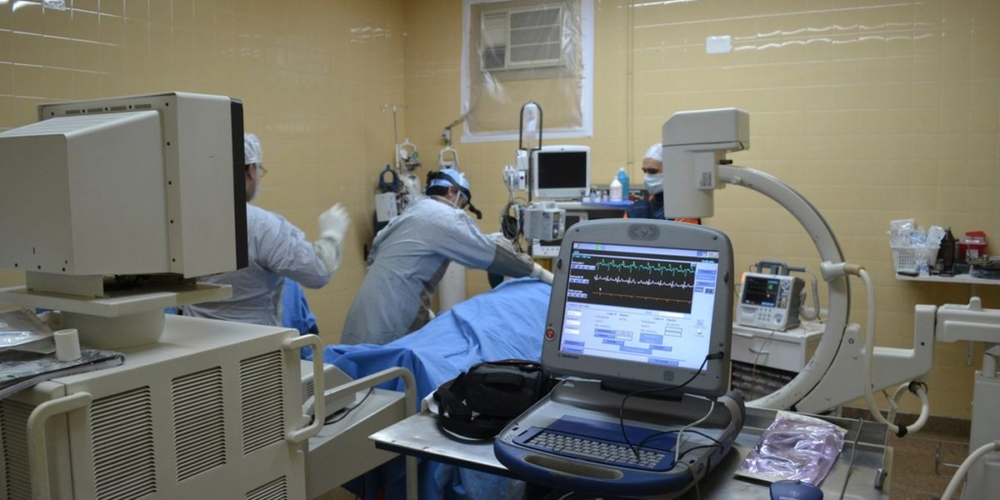

Her on arızanın dördünde mühendis ikinci kez gidiyor

Sermedon Tıbbi Cihaz Sağlık · Ankara · 28 çalışan · 9 servis mühendisi, 640 kurulu cihazArızanın ilk ziyarette giderilme oranı yüzde 58. Mühendis parça beklerken hastanenin cihazı ortalama 7,4 gün çalışmıyor.
Yeni parça almadan önce 88 ikinci ziyaretin sebebini saydı. En sık kullanılan parçaları mühendis araçlarına koydu ve çağrıda ön teşhise başladı; ilk ziyarette çözüm oranı yüzde 79'a çıktı.
Ne oldu?
Sermedon'un teknik servisine ayda ortalama 210 arıza çağrısı geliyor. Barış Kılınç son altı ayın kayıtlarını çıkardı: bunların yalnızca 122'si ilk ziyarette çözülüyor, yani yüzde 58'i. Kalan 88 çağrıda mühendis arızayı görüyor, parça sipariş ediyor ve ortalama altı gün sonra ikinci kez gidiyor. Cihaz bu sırada ortalama 7,4 gün çalışmıyor.
Her ek ziyaret, yol ve mühendis zamanıyla yaklaşık 4.800 TL'ye mal oluyor; ayda 422.400 TL. Bakım sözleşmelerinde cihazın yılın yüzde 95'inde çalışır durumda olacağı taahhüt ediliyor. Son üç ayda üç hastane bu taahhüt tutulmadığı için toplam 380.000 TL ceza kesti.
Barış Kılınç çözümü depoda görüyor: 5 milyon TL'lik ek yedek parça alınsın. Hülya Demirci rakamı masaya koyuyor: depoda zaten 12 milyon TL'lik, 1.900 kalem parça var ve bunların 1.100'ü son iki yılda bir kez bile kullanılmadı. Ona göre sorun parçanın azlığı değil, yanlış parçanın rafta, doğru parçanın yurt dışında olması.
Rakamlarla
Sermedon Tıbbi Cihaz ne yaptı?
Barış Kılınç bir ayın 88 ikinci ziyaretini tek tek inceledi: 61'inde parça yoktu, 17'sinde ilk teşhis yanlıştı ve yanlış parça götürülmüştü, 10'unda mühendis cihaza ya da yetkiliye ulaşamamıştı. Parça beklenen arızaların yüzde 70'i yalnızca 40 kalem parçadan kaynaklanıyordu. Bu 40 kalem depoya, en sık kullanılan 15'i mühendislerin araçlarına kondu. Çağrı alınırken hata kodu ve fotoğraf istenmeye başlandı.
Dört ay sonra 210 çağrının 166'sı ilk ziyarette çözülüyordu: yüzde 79. İkinci ziyaret sayısı 88'den 44'e indi; ayda 211.200 TL tasarruf. Cihazın ortalama çalışmama süresi 7,4 günden 3,1 güne düştü. Hareketsiz stoğun 2,9 milyon TL'lik kısmı iade edildi ya da satıldı, 1,3 milyon TL'lik sık kullanılan parça alındı; depo 12 milyon TL'den 10,4 milyon TL'ye indi. 5 milyon TL'lik ek alım yapılmadı.
Benzer bir durumda izlenecek yol: adım adım
1İlk 24 saat
- Parça siparişini beklet ve önce 88 ikinci ziyaretin sebebini say: kaçında parça yoktu, kaçında yanlış parça götürüldü, kaçında mühendis cihaza ulaşamadı. Üç sebebin çözümü birbirinden farklı.
- Parça beklenen arızalarda hangi parçaların beklendiğini listele. Büyük olasılıkla birkaç düzine kalem, beklemelerin büyük kısmını açıklıyor.
2Bu hafta
- En sık beklenen parçaları depoya değil, mühendisin aracına koy. Her mühendisin çantasında, baktığı cihazlara göre belirlenmiş sabit bir parça seti olsun.
- Çağrıyı alan kişi arızayı ilk telefonda daraltsın: cihazın modeli, ekrandaki hata kodu, bir fotoğraf ya da kısa bir video. Mühendis yola çıkmadan önce neyle karşılaşacağını bilsin.
- Hastane kaynaklı boşa ziyaretler için randevu onayı al: cihaz o saatte boş olacak mı, yetkili kişi orada mı.
- İki yıldır hareket etmeyen stoğu ayır; üreticiye iade edilebilecekleri, başka servislere satılabilecekleri ve hurdaya ayrılacakları belirle.
3Kalıcı çözüm
- Stoğu tutara göre değil, arıza kayıtlarına göre yönet. Hangi parçanın rafta duracağına satın alma değil, son 12 ayın arıza verisi karar versin.
- İlk ziyarette çözüm oranını mühendis ve cihaz modeli bazında her ay izle; hedefi yüzde 80 olarak koy.
- Bakım sözleşmelerinde en kritik cihazlar için hastanede küçük bir parça seti bulundurmayı öner ve bunu sözleşme fiyatına dahil et.
Çıkarılacak dersDolu depo, doğru parçanın orada olduğu anlamına gelmez; stok tutarla değil, arızayla ölçülür.
3 yorum
-
OSOrhan SeyrekHastane biyomedikal sorumlusu
Hastane tarafından bakınca eksik olan şu: cihaz 3,1 gün de dursa hasta bekliyor. Bizim için önemli olan onarım süresi değil, o sürede ne kullanacağımız. En kritik beş cihaz modeli için firmanın elinde ödünç verilecek bir yedek cihaz olsa, ikinci ziyaret sorun olmaktan çıkar.
Barış Kılınç Sermedon Tıbbi Cihaz · Teknik Servis Müdürü Uygulamaya alındıGeri aldığımız ikinci el cihazlardan üçünü yenileyip ödünç cihaz olarak ayırdık. Onarımı iki günü geçecek arızalarda, bakım sözleşmesi olan hastaneye ertesi gün götürüyoruz.
-
NENazlı ErdoğduSaha servis mühendisi
17 yanlış teşhis bana az gelmedi. Telefonda hata kodu sormak iyi, ama çağrıyı alan kişi teknik değilse yanlış kodu yanlış parçayla eşleştirir. Çağrıyı sırayla nöbetçi bir mühendis karşılamalı; günde bir mühendis sahadan eksilir, ama on boşa yolculuk önlenir.
Barış Kılınç Sermedon Tıbbi Cihaz · Teknik Servis Müdürü Firma beğendiŞu an çağrıyı servis sekreterimiz, bir kontrol listesiyle alıyor. Dokuz mühendisle nöbet kurmak zor ama yanlış teşhis sayısı düşmezse deneyeceğimiz ilk şey bu.
-
KUKenan UludağTıbbi cihaz firması ortağı
1.100 kalem ölü stok bir günde birikmez. Bu parçaları kim, neden aldı? Çoğu zaman üretici cihazla birlikte “önerilen yedek parça paketi” satar ve yarısı hiç kullanılmaz. Yeni cihaz alımlarında o paketi iade hakkıyla almadıkça depo beş yıl sonra yine aynı hale gelir.